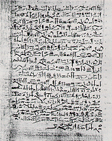

Ein Papyrus, das 1882 von Edwin Smith in ein Luxor Antiquitätengeschäft gebracht wurde, beschreibt 48 chirurgische Beobachtungen von Kopfwunden. Die Beobachtungen wurden in einer Kombination von Symptom-Diagnose-Behandlung-Prognose dargelegt: WENN (IF) ein Patient dieses Symptom aufweist, DANN (THEN) hat er diese Verletzung mit dieser Prognose, wenn diese Behandlung angewendet wird. Dies stellt das erste bekannte Expertensystem dar.